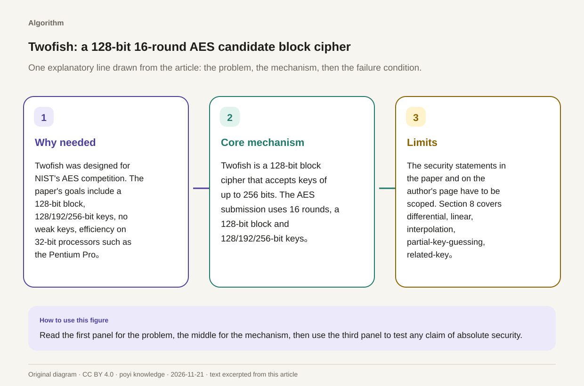
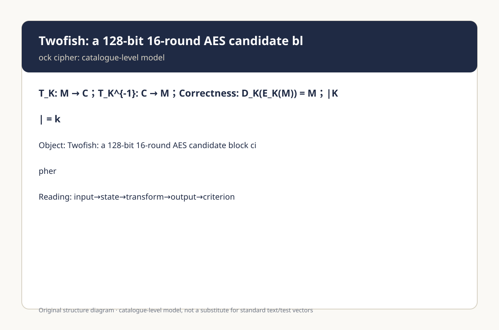

Principles
Algorithm: Twofish (Twofish 分组密码). Twofish is a 128-bit block cipher that accepts keys of up to 256 bits. The AES submission uses 16 rounds, a 128-bit block and 128/192/256-bit keys, corresponding to k=N/64=2/3/4 64-bit key units. It is described as a 16-round Feistel-like network: the round function F is bijective, four key-dependent 8-by-8-bit S-boxes and a fixed 4-by-4 MDS matrix form the g function, the two g outputs pass through a pseudo-Hadamard transform (PHT), and round keys are added. Apart from two one-bit rotations, the structure is Feistel-like; those rotations are what distinguish Twofish from a pure Feistel network. The 128-bit plaintext is loaded little-endian into four 32-bit words P0..P3 and xored with K0..K3 for input whitening:
R_{0,i} = P_i XOR K_i i = 0..3
Round r (r=0..15) computes:
(F_{r,0}, F_{r,1}) = F(R_{r,0}, R_{r,1}, r)
R_{r+1,0} = ROR(R_{r,2} XOR F_{r,0}, 1)
R_{r+1,1} = ROL(R_{r,3}, 1) XOR F_{r,1}
R_{r+1,2} = R_{r,0}
R_{r+1,3} = R_{r,1}
After 16 rounds the last swap is undone and output whitening is applied:
C_i = R_{16,(i+2) mod 4} XOR K_{i+4} i = 0..3
F first applies g to R0, then applies g to R1 rotated left by 8, combines the results in a PHT and adds two round keys:
T0 = g(R_{r,0})
T1 = g(ROL(R_{r,1}, 8))
F_{r,0} = (T0 + T1 + K_{2r+8}) mod 2^32
F_{r,1} = (T0 + 2*T1 + K_{2r+9}) mod 2^32
g splits a 32-bit word into four bytes, passes each byte through its own key-dependent S-box, treats the four results as a vector over GF(2^8), and multiplies it by the fixed MDS matrix. The field is GF(2)[x]/(v(x)) with v(x)=x^8+x^6+x^5+x^3+1 (0x169), and the matrix is:
MDS =
[ 01 EF 5B 5B ]
[ 5B EF EF 01 ]
[ EF 5B 01 EF ]
[ EF 01 EF 5B ]
The key schedule starts with h(X, L). h splits X and every word of L into bytes; for k=4 it first mixes with L3 using q1, q0, q0, q1; for k>=3 it then mixes with L2 using q1, q1, q0, q0; the final stage always uses L1, L0 and the q1/q0 compositions:
y0 = q1[q0[q0[x0] XOR l1,0] XOR l0,0]
y1 = q0[q0[q1[x1] XOR l1,1] XOR l0,1]
y2 = q1[q1[q0[x2] XOR l1,2] XOR l0,2]
y3 = q0[q1[q1[x3] XOR l1,3] XOR l0,3]
The four bytes y0..y3 are then multiplied by the same MDS matrix to produce h's output. The k=4 L3 stage and the k>=3 L2 stage act on x; with k=2, x goes directly into the final L1/L0 stage. The key-dependent S-boxes are exactly g(X)=h(X,S), where S is derived from the key by an RS encoding. The key bytes are loaded little-endian into 2k 32-bit words M0..M(2k-1). Even-indexed words form Me and odd-indexed words form Mo. Each group of eight key bytes is encoded by the RS matrix (polynomial w(x)=x^8+x^6+x^3+x^2+1, i.e. 0x14D) into four bytes, packed into a word S_i, and the S list is stored in reverse order:
S = (S_{k-1}, S_{k-2}, ..., S_0)
rho = 2^24 + 2^16 + 2^8 + 1 = 0x01010101
A_i = h(2i*rho, Me)
B_i = ROL(h((2i+1)*rho, Mo), 8)
K_{2i} = (A_i + B_i) mod 2^32
K_{2i+1} = ROL((A_i + 2*B_i) mod 2^32, 9)
i runs from 0 to 19 and produces 40 expanded key words. The constant rho multiplies a byte value i into a word whose four bytes are all i, so h receives words whose bytes are 2i or 2i+1. The fixed permutations q0 and q1 are each built from four 4-bit S-boxes. For an input byte x:
a0 = x >> 4; b0 = x AND 15
a1 = a0 XOR b0
b1 = a0 XOR ROR4(b0, 1) XOR ((8*a0) AND 15)
a2 = t0[a1]; b2 = t1[b1]
a3 = a2 XOR b2
b3 = a2 XOR ROR4(b2, 1) XOR ((8*a2) AND 15)
a4 = t2[a3]; b4 = t3[b3]
y = 16*b4 + a4
The four q0 tables are:
t0 = 8 1 7 D 6 F 3 2 0 B 5 9 E C A 4
t1 = E C B 8 1 2 3 5 F 4 A 6 7 0 9 D
t2 = B A 5 E 6 D 9 0 C 8 F 3 2 4 7 1
t3 = D 7 F 4 1 2 6 E 9 B 3 0 8 5 C A
The four q1 tables are:
t0 = 2 8 B D F 7 6 E 3 1 9 4 0 A C 5
t1 = 1 E 2 B 4 C 3 7 6 D A 5 F 9 0 8
t2 = 4 C 7 5 1 6 9 A 0 E D 8 2 B 3 F
t3 = B 9 5 1 C 3 D E 6 4 7 F 2 0 8 A
The submission states that q0 has one fixed point and q1 has two. This article's implementation rebuilds both 256-byte permutations from those four-bit tables and checks bijectivity and the fixed-point counts. Twofish is little-endian: the 16 plaintext bytes fill the four 32-bit words from least to most significant byte, and keys and ciphertext follow the same convention. Parsing a non-zero block or key big-endian gives different results; all-zero vectors are unaffected by byte order. Keys shorter than 256 bits are zero-padded at the end to the next defined length (an 80-bit key becomes 128 bits), not truncated or repeated. Decryption inverts encryption. It first undoes output whitening to recover R16:
R_{16,0} = C_2 XOR K_6
R_{16,1} = C_3 XOR K_7
R_{16,2} = C_0 XOR K_4
R_{16,3} = C_1 XOR K_5
(F0, F1) = F(R_{r+1,2}, R_{r+1,3}, r)
R_{r,0} = R_{r+1,2}
R_{r,1} = R_{r+1,3}
R_{r,2} = ROL(R_{r+1,0}, 1) XOR F0
R_{r,3} = ROR(R_{r+1,1} XOR F1, 1)
Finally P_i = R_{0,i} XOR K_i. Input and output whitening do not change the cryptographic structure of the block cipher, but they keep an attacker from directly seeing the internal state at the first and last rounds.

Why it matters
Twofish was designed for NIST's AES competition. The paper's goals include a 128-bit block, 128/192/256-bit keys, no weak keys, efficiency on 32-bit processors such as the Pentium Pro, implementability on 8-bit smart cards and dedicated VLSI hardware, a simple design, suitability for stream ciphers, hashing and MACs, and support for "any key length up to 256 bits". The designers also set concrete performance targets: fewer than 500 cycles per block on Pentium/Pentium Pro/Pentium II for a fully optimized version, feasible operation on an 8-bit microprocessor with only 64 bytes of RAM, and fewer than 20000 gates in hardware.
The paper's abstract reports three 1998 figures: a fully optimized Pentium Pro implementation at 17.8 cycles per byte, "an 8-bit smart card implementation" at 1660 cycles per byte, and about 14000 gates in hardware. These are design and implementation results from that period, not promises for any current platform.
Twofish allows different key-schedule trade-offs: all subkeys can be precomputed for encryption speed, or computed on demand when memory is tight. Section 12 says "the one-bit rotations of the target block" were kept primarily to reduce vulnerability to attacks based on byte boundaries; the choice considered both performance and cryptanalysis.
On security, the paper says the designers cryptanalyzed Twofish extensively and that their best attack breaks five rounds with 2^22.5 chosen plaintexts and 2^51 work; the full 16 rounds were not broken by the same analysis. The author's page further states that there is currently no successful cryptanalysis of Twofish. That is a statement on a designer-maintained page, not an independent proof against every attack model and not a guarantee about the future. Section 8 also discusses differential, linear, interpolation, partial-key-guessing, related-key, side-channel and fault analysis; those results concern reduced rounds or specific conditions and cannot be extrapolated to an absolute security claim.
Twofish was one of the five AES finalists but was not selected as AES. The author's page says Twofish is unpatented and that its source code is uncopyrighted and license-free for all uses; these are the designer's/maintainer's statements, and any use should still check the specific code and licence text. The final AES standard is FIPS 197, which specifies Rijndael only; Twofish is not part of that standard.
For teaching, Twofish combines several independent building blocks: key-dependent 8-bit S-boxes, an MDS matrix over GF(2^8), a PHT, one-bit rotations, input/output whitening, and a key schedule more complex than the data path. It is a good exercise in aligning byte order, field polynomials, key expansion and intermediate values with a specification instead of merely checking that an implementation can decrypt its own output.
Applications
Appendix A.1 of the submission gives full intermediate values for a 128-bit all-zero key, the 192-bit key 0123456789ABCDEFFEDCBA98765432100011223344556677, and the 256-bit key 0123456789ABCDEFFEDCBA987654321000112233445566778899AABBCCDDEEFF. The plaintext is all zero in each case. The expanded key words K0..K9 and K38..K39 of the 128-bit case are:
K0..K7 = 52C54DDE 11F0626D 7CAC9D4A 4D1B4AAA
B7B83A10 1E7D0BEB EE9C341F CFE14BE4
K8..K9 = F98FFEF9 9C5B3C17
K38..K39 = F298311E 696EA672
The intermediate states start with input whitening R[0]=52C54DDE 11F0626D 7CAC9D4A 4D1B4AAA; round 1 gives t0=C06D4949, t1=41B9BFC1 and R[1]=52C54DDE 11F0626D C38DCAA4 7A0A91B6. After 16 rounds and output whitening the ciphertext is 9F589F5CF6122C32B6BFEC2F2AE8C35A. The 192-bit case produces CFD1D2E5A9BE9CDF501F13B892BD2248 and the 256-bit case produces 37527BE0052334B89F0CFCCAE87CFA20.
Appendix A.2 contains chained known-answer tests: from entry 2 onwards each plaintext is the previous ciphertext, and from entry 3 onwards the key is assembled from the ciphertexts two (and, where needed, three) entries back, truncated or zero-padded to the key length. The paper lists 49 entries for each key size but prints only some of them. This article reproduces entries 1-10 and 48-49 of each group, for example:
128-bit, entry 1:
K = 00000000000000000000000000000000
P = 00000000000000000000000000000000
C = 9F589F5CF6122C32B6BFEC2F2AE8C35A
128-bit, entry 3:
K = 9F589F5CF6122C32B6BFEC2F2AE8C35A
P = D491DB16E7B1C39E86CB086B789F5419
C = 019F9809DE1711858FAAC3A3BA20FBC3
192-bit, entry 1:
K = 000000000000000000000000000000000000000000000000
P = 00000000000000000000000000000000
C = EFA71F788965BD4453F860178FC19101
256-bit, entry 1:
K = 0000000000000000000000000000000000000000000000000000000000000000
P = 00000000000000000000000000000000
C = 57FF739D4DC92C1BD7FC01700CC8216F
These vectors cover all three key lengths, zero and non-zero keys, zero and non-zero plaintexts, and the chained relation between consecutive states. They are fixed answers printed in the submission, not just self-consistent encrypt-then-decrypt checks.
The Linux kernel CryptoAPI contains a Twofish implementation (crypto/twofish_generic.c). Its file header describes a clean-room implementation written from the submission paper, originally from GPG code and later ported to CryptoAPI. This shows that Twofish exists as a usable block cipher in a general operating system's cryptographic interface; it does not show that the kernel recommends Twofish or that any protocol standard adopted it.

Limits & attacks
The security statements in the paper and on the author's page have to be scoped. Section 8 covers differential, linear, interpolation, partial-key-guessing, related-key, side-channel and fault analysis. The abstract's "our best attack breaks 5 rounds" is a reduced-round result, not a break of the full 16-round cipher. The author's page's "Currently there is no successful cryptanalysis" is a designer-maintained statement whose own page metadata is dated (published 2015-12-10, modified 2022-11-07) and which itself dates the analysis it calls best to 2000 (Shiho Moriai and Yiquin Lisa Yin), while offering no independent reproduction conditions and is not a formal proof. This article does not repeat unverified third-party attack papers to claim that Twofish has been broken, nor does it claim absolute security.
At the implementation level, Twofish's key-dependent S-boxes and MDS multiplication are usually accelerated with table lookups. Lookups create cache and timing side-channel risks; Section 8.9 lists side-channel and fault analysis as separate attack classes. This article's teaching implementation uses ordinary arrays and JavaScript bit operations, is not constant-time, and has no masking, key isolation or fault detection; it must not protect real data.
The key schedule is more complex than the data path: it needs RS encoding, the h function, 40 expanded key words and up to four key-dependent S-boxes. That creates implementation cost and a larger error surface, but complexity alone is not a security weakness; the paper uses it to support precomputation and on-the-fly trade-offs and to avoid weaknesses of a simple key schedule such as partial-key guessing and related-key attacks. The vector checks here cover known answers under fixed keys and do not evaluate every cryptographic property of the key schedule.
Deployment scope also matters. FIPS 197 specifies AES (Rijndael) only; Twofish is not a FIPS 197 algorithm. Linux kernel support is an available implementation, not standardization or a security recommendation. Twofish defines only a block cipher: it supplies no mode of operation, IV management, padding, integrity protection, key agreement or side-channel defence. Protocols and implementations must handle those separately.
Finally, all 36 chained vectors and the three sets of intermediate values come from the same submission appendix. They are strong checks that an implementation matches the specification, but they do not prove Twofish's security against chosen-plaintext, related-key, side-channel or other attacks. Passing fixed vectors is not the same as completing cryptanalysis.
History
Twofish was designed by Bruce Schneier, John Kelsey, Doug Whiting, David Wagner, Chris Hall and Niels Ferguson. The paper is dated 15 June 1998 and was submitted to NIST's AES selection process. Section 1 explains that NIST announced the AES programme in 1997 and issued a public call for algorithms to replace DES; Twofish was one of the submissions.
Section 12 describes Twofish's origin in an attempt to adapt the original Blowfish design to a 128-bit block. The designers wanted to keep Blowfish's speed and good diffusion while making F bijective, making the key schedule much more efficient, reducing table size so the cipher could run on smart cards and custom hardware, and, if possible, beating Blowfish per byte. This is a design lineage; it does not make Twofish and Blowfish interchangeable, and it does not make learning Blowfish a prerequisite for using Twofish.
NIST's five AES finalists were MARS, RC6, Rijndael, Serpent and Twofish. Twofish was not selected as AES; NIST chose Rijndael and published FIPS 197 on 26 November 2001. FIPS 197 was updated on 9 May 2023 as FIPS 197-upd1; the update does not change the fact that Twofish was not selected as AES.
The author's page says Twofish is unpatented and that its source code is uncopyrighted and license-free, and that there is currently no successful cryptanalysis of Twofish. The licence statement must be checked against the specific code and licence text, and the cryptanalysis statement is the designer's claim, not independent proof. Twofish later appeared in the Linux kernel CryptoAPI, but it is not the AES standard and did not displace AES's standardized position.
Worked example & verification
Worked example
Take one published or standard test vector, record the input, the ordered steps and the byte-exact output, then compare with an independent implementation. Where no citable numeric vector is available, the entry records only structural steps and does not invent an output.
References
- Wikipedia search entry for Twofish 分组密码. https://zh.wikipedia.org/w/index.php?search=Twofish%20%E5%88%86%E7%BB%84%E5%AF%86%E7%A0%81
- Handbook of Applied Cryptography (Menezes, van Oorschot, Vanstone). https://www.cacr.math.uwaterloo.ca/hac/